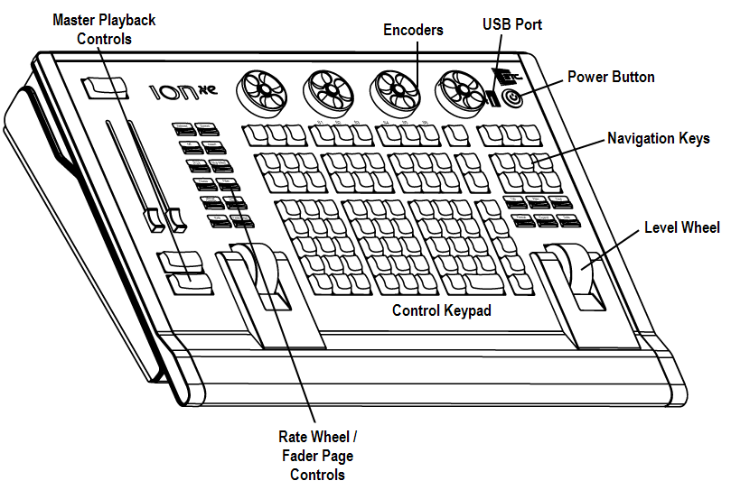
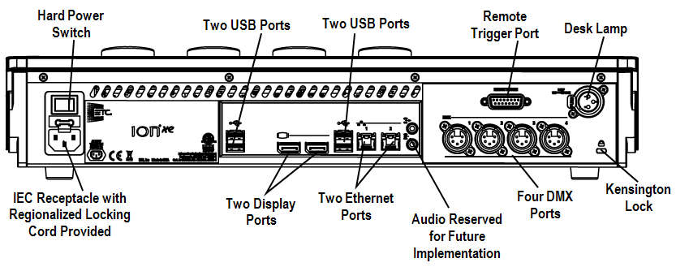
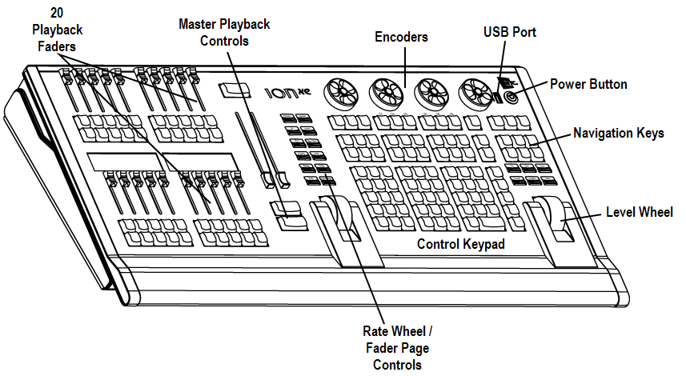
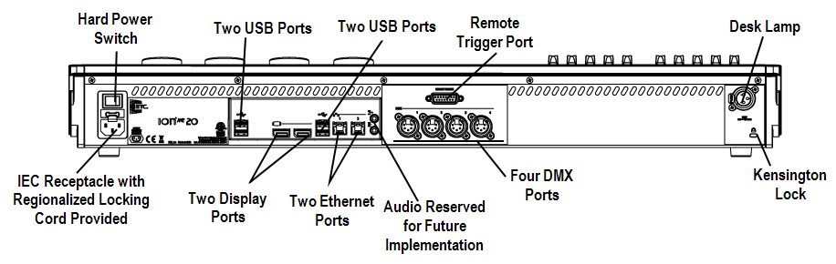

Below are diagrams of Ion Xe and Ion Xe 20 with references made to specific areas of use. The terms and names for each area and interface are used throughout this manual.




WARNING: This device contains a lithium battery. Battery may explode if mistreated. Do not recharge, disassemble or dispose of in fire.
CAUTION: For continued protection against risk of fire, replace only with same type and rating of fuse.
CAUTION: Pour ne pas compromettre la protection contre les risques d’incendie, remplacer par un fusible de même type et de mêmes caractéristiques nominales.
CAUTION: Power cord must be connected using an earth ground connection.